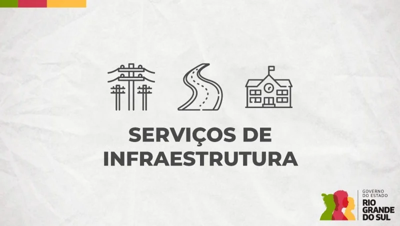
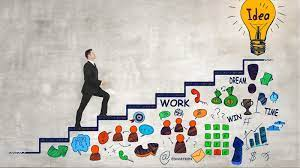

Do Campo à Cidade: Um Novo Começo, Um Futuro Promissor
Sonha em construir uma vida mais próspera e cheia de oportunidades? A cidade te espera de braços abertos!
Por que a cidade é o seu próximo destino?
Um mundo de possibilidades: A cidade é um centro pulsante de atividades, onde você encontrará uma infinidade de opções de emprego, desde grandes empresas até startups inovadoras. Seja qual for sua área de interesse, a cidade certamente terá algo a oferecer.
Diversidade cultural e social: A cidade é um caldeirão cultural, onde você terá a oportunidade de conhecer pessoas de diferentes origens e vivenciar experiências únicas. Amplie seus horizontes e enriqueça sua vida!
Acesso a serviços e infraestrutura: Esqueça as longas distâncias para ter acesso a serviços de saúde, educação, transporte público e lazer. Na cidade, tudo está ao seu alcance, facilitando sua rotina e proporcionando mais qualidade de vida.
Desenvolvimento pessoal: A cidade oferece um ambiente estimulante para o seu crescimento pessoal e profissional. Participe de cursos, workshops e eventos que vão te ajudar a desenvolver novas habilidades e alcançar seus objetivos.
